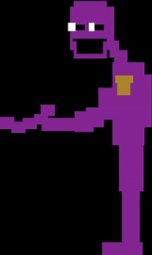
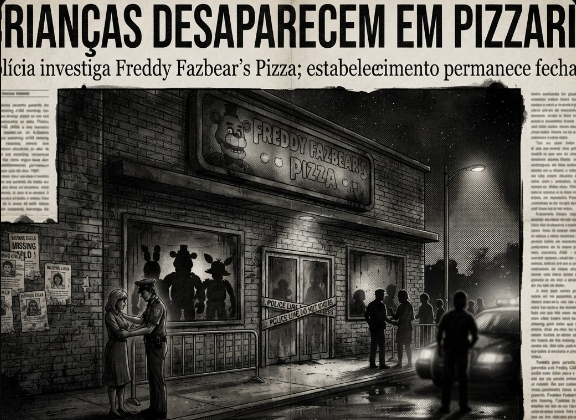
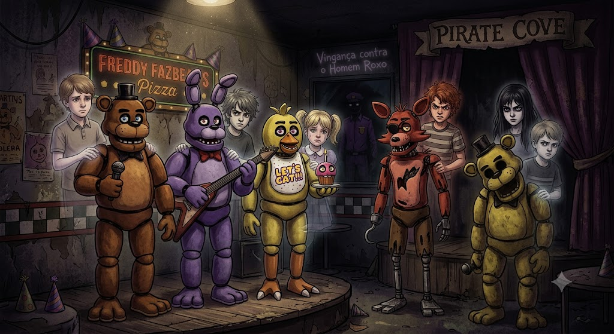

Meu primeiro post
Por: Thaylini Perini
Boas-vindas ao meu novo blog! Prepare-se para descobrir os segredos mais sombios e teorias do universo de Five Nights at Freddy's.
Teorias, segredos e mistérios do universo de Five Nights at Freddy's
Por: Thaylini Perini
Boas-vindas ao meu novo blog! Prepare-se para descobrir os segredos mais sombios e teorias do universo de Five Nights at Freddy's.

Por: Thaylini Perini
William Afton é o grande vilão por trás de todos os acontecimentos da pizzaria. Entenda como ele deu origem aos mistériose aos animatrônicos assombrados do jogo.

Por: Thaylini Perini
A tragédia que deu origem ao mistério: entenda como William Afton atraiu cinco crianças para os fundos da pizzaria vestindo um traje e como as almas delas passaram a habitar os animatrônicos.

Por: Thaylini Perini
Conheça as almas por trás dos robôs; Gabriel habita o Freddy, Jeremy Bonnie, Susie na Chica, Fritz no Foxy e Cassid/Evan na Golden Freddy, buscando vingança contra o homem roxo.